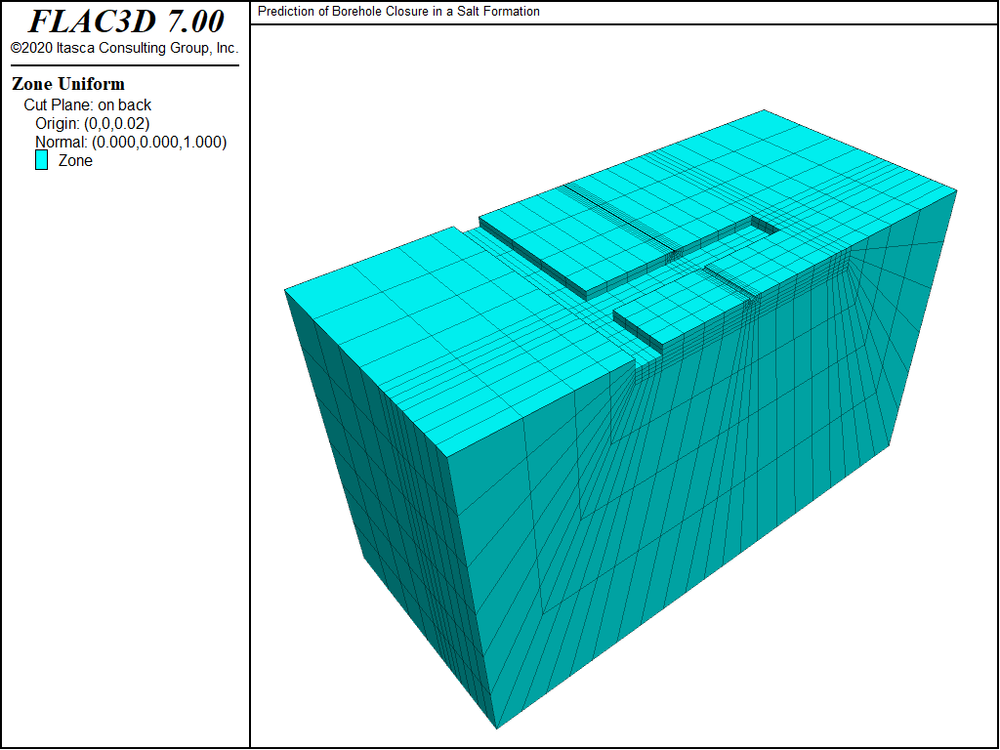
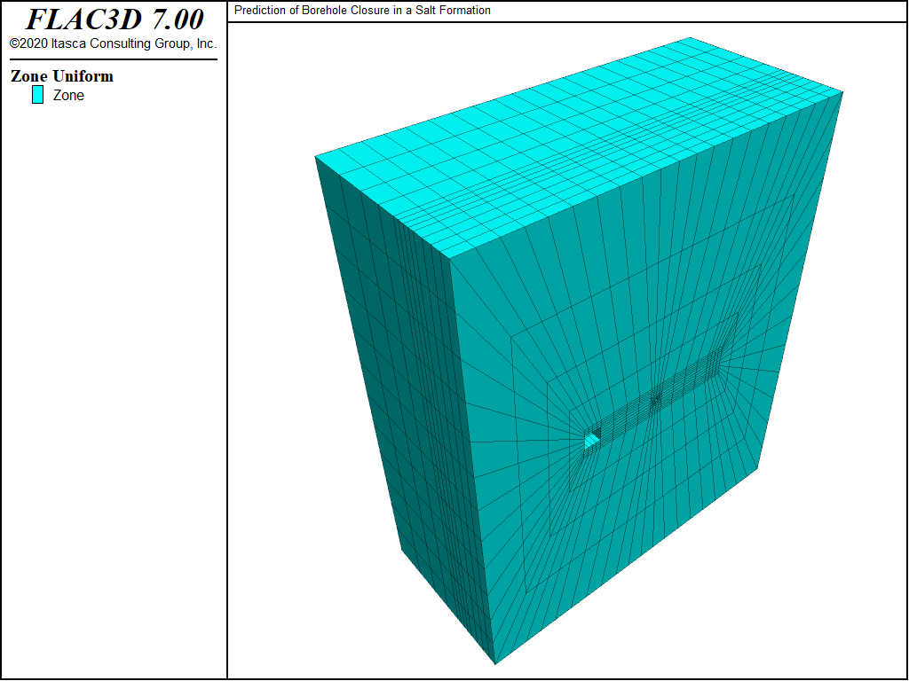
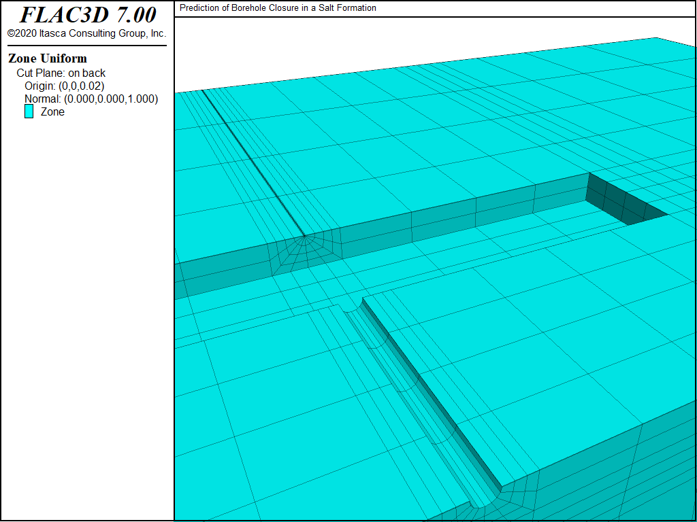
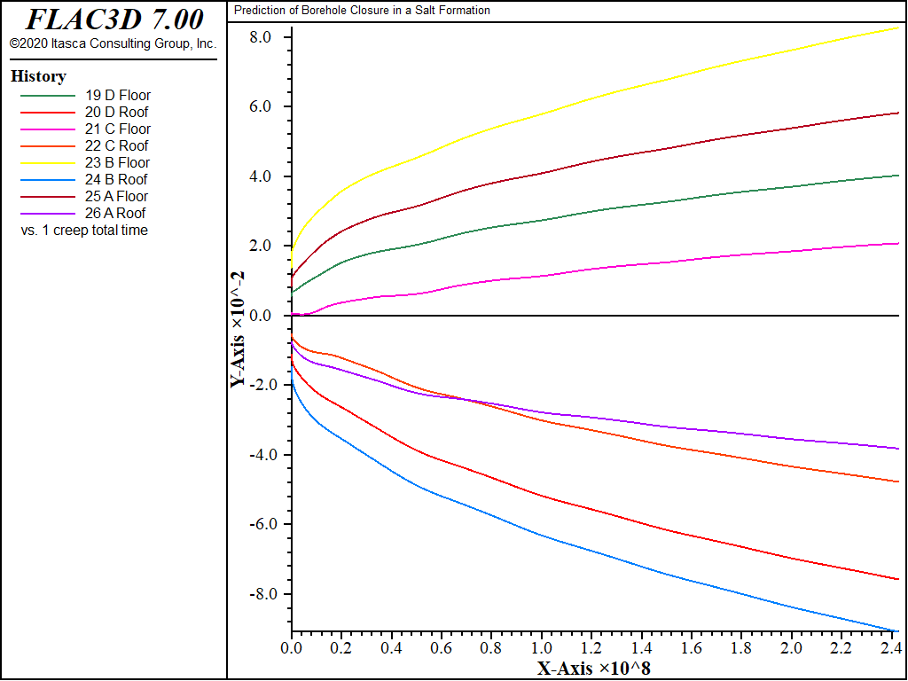
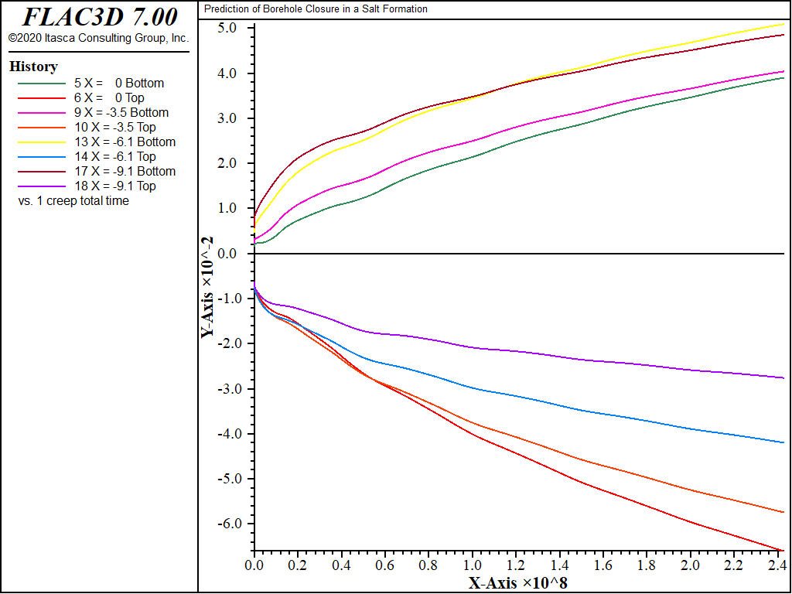
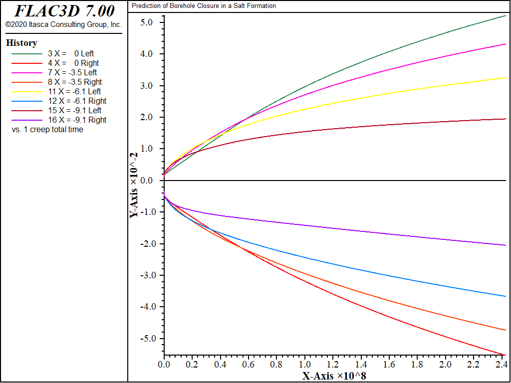
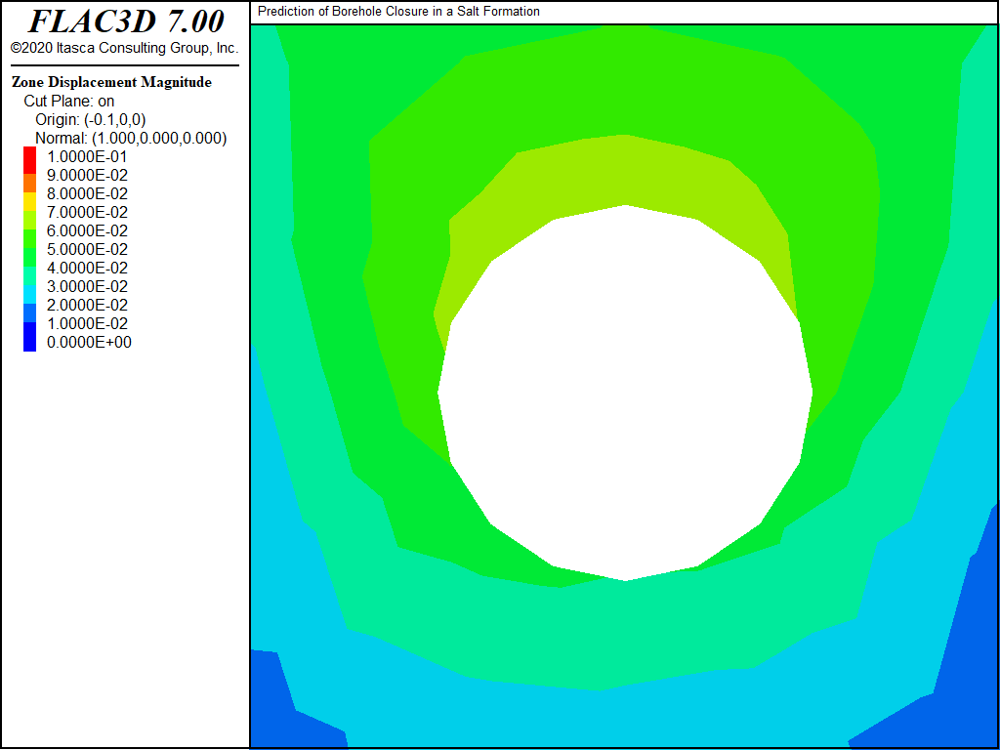
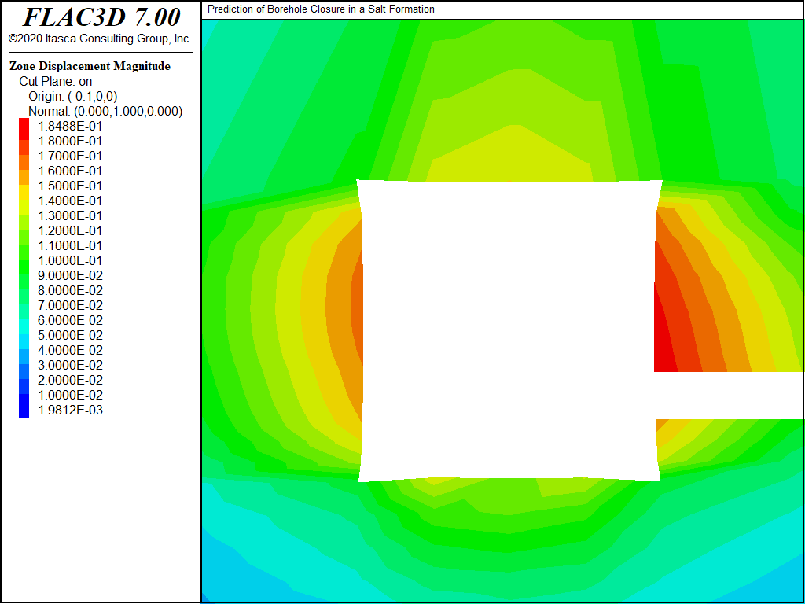
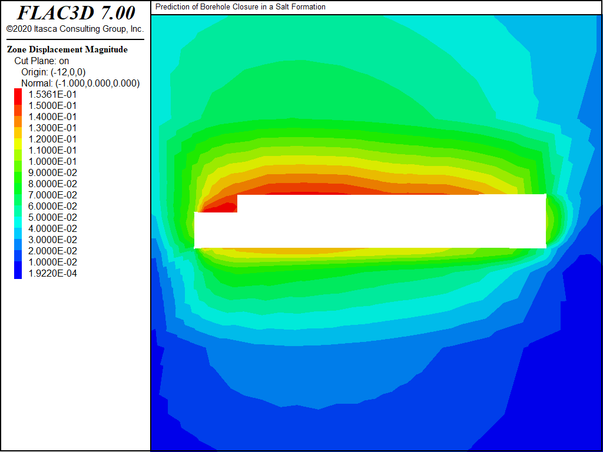

盐层中钻孔闭合的预测
问题描述
注意
本示例的工程文件可在 FLAC3D 中查看/运行。[1] 所使用的主数据文件（main data file）在本示例末尾给出。
在地表以下约 600 m 深处的盐层中开挖两个矿房和一条横向巷道。在两个矿房之间的矿柱中钻设一个水平钻孔。该钻孔的蠕变闭合由开挖过程引起的剪应力驱动。本示例采用盐的 WIPP 参考模型估算闭合量。模拟历时 7.7 年，并考虑了时刻零瞬间发生的开挖与钻孔事件。本示例问题是 Sandia National Laboratories 所进行的中间尺度钻孔试验的简化模型（见 Argüello，1991）。
建模步骤
垂直于钻孔轴线且位于两矿房中间的平面是本问题的对称面。选取一套坐标轴，其原点位于对称面上，\(x\) 轴沿钻孔轴线方向，\(z\) 轴竖直向上。所考虑的域由对称面和五个远场平面界定，其中两个水平面位于 \(|z|\) = 53.36 m，三个竖直平面位于 \(|y|\) = 44.51 m 和 \(x\) = -39.62 m。矿房、巷道和钻孔的布置见图 1（Figure 1），为便于说明，对称面位于前方且模型的上半部分已移除。试验矿房宽 5.49 m、高 5.49 m、长 30.48 m，其轴线平行于对称面。横向巷道宽 4.27 m、高 3.66 m，贯穿整个模型。穿过矿柱钻设的钻孔直径为 0.91 m、长 9.14 m，位于矿房长度中点处、底板上方约 1.57 m。
边界条件包括在模型顶部施加 13.57 MPa 的压力以代表上覆岩层的荷载，以及侧面的滚动边界。计算中考虑重力荷载，岩石的质量密度为 2300 kg/m3，重力加速度为 9.79 m/sec2。初始应力状态为岩体自重应力状态（即各向同性且随深度线性变化）。假定试验矿房、横向巷道和钻孔在时刻 \(t\) = 0 瞬时开挖完成。在整个 7.7 年的模拟过程中，温度恒定为 300 K。
假定该地层完全由石盐组成，采用具有若干性质的 WIPP 模型进行模拟：
| 体积模量，\(K\) | 1.65 GPa |
| 剪切模量 \(G\) | 1.00 GPa |
| WIPP 模型指数，\(n\) | 4.90 |
| WIPP 模型常数，\(D\) | 5.79 × 10-36 Pa-4.9 s-1 |
| 活化能，\(Q\) | 12,000 cal/mol |
| WIPP 模型常数，\(A\) | 4.56 |
| WIPP 模型常数，\(B\) | 127.0 |
| 二次蠕变速率，\(\dot {\epsilon}_{ss}^*\) | 5.39 × 10-8 s-1 |
通用气体常数 \(R\)（同样用于模型中）的值为 1.987 cal/mol-K。
图 1（Figure 1） 和 图 2（Figure 2） 所示的 FLAC3D 模型由三层平行于对称面的网格单元构成；这些层分别对应矿柱、矿房和远场区域。每层在钻孔附近由径向圆柱基本形状构成，在更远处由长方体基本形状构成。钻孔区域的局部放大图见图 3（Figure 3）。基本形状在与 \(y\) 和 \(z\) 坐标正值对应的域内生成，然后分别对 \(z\) = 0 和 \(y\) = 0 平面进行镜像。最终网格共有 4896 个网格单元。
将具有上述性质的 WIPP 模型赋予各网格单元。请注意，本次计算中温度作为网格单元性质进行初始化。指定了盐的密度和重力矢量的各分量，并选择了大应变模式。初始应力按岩体自重应力状态设置，并施加滚动型边界条件和压力边界条件。沿钻孔轴线的四个位置（对应 \(x\) = 0、\(x\) = -3.5 m、\(x\) = -6.1 m 和 \(x\) = -9.14 m）记录 \(y\) 和 \(z\) 方向的网格点位移时程。矿柱的响应还通过记录矿柱顶板和底板的竖向位移时程来监测，这些点包括沿巷道的两个点（C 和 B）以及沿钻孔轴线的两个点（D 和 A），二者分别位于 \(x\) = 0 和 \(x\) = -9.14 m。


图 1：模型几何——下半部分。


图 2：模型几何——正视图。


图 3：钻孔区域。
通过将空模型赋予相应体积内的网格单元，模拟巷道、矿房和钻孔的瞬时开挖。通过将 设置蠕变计算激活状态（model creep active） 设为 关闭（off） 来抑制蠕变行为，并将模型循环计算至平衡（对应平均力比为 1e-5），以建立系统的初始“瞬时”弹性响应（在蠕变过程的时间尺度上）。
随后通过将 设置蠕变计算激活状态（model creep active） 设为 开启（on） 来启用蠕变响应。蠕变时步初始化为 200 秒，其上限设为 40,000 秒。通过将 设置蠕变时步自动控制（model creep timestep automatic） 设为 开启（on） 可启用自动时步选择。在分析结果之前，将模型循环计算至 7.7 年的龄期。
该模型约需 261 MB 内存，在 3.4 GHz Intel i7 计算机上完成整个模拟大约需要 1 分钟。
讨论
图 4（Figure 4） 给出了矿柱底板和顶板处 C、D、B 和 A 点的位移时程。在模拟结束时，矿柱缩短量（定义为顶板与底板之间的相对竖向位移）在矿房与巷道交汇处（B 点）最大（约为 17.6 cm），在矿柱中心（D 点）最小（约为 6.6 cm）。在钻孔末端（A 点）约为 9 cm，在沿巷道的矿柱长度中点处（C 点）为 10.5 cm。
钻孔变形见图 5（Figure 5） 和 图 6（Figure 6），其中给出了 7.7 年后沿钻孔长度的四个位置（对应 \(x\) = 0、\(x\) = -3.5 m、\(x\) = -6.1 m 和 \(x\) = -9.14 m）处钻孔壁的竖向和水平位移。可以看出，竖向闭合量从矿柱中心向矿房方向递减，在上述各位置的估计值分别为 10.3 cm、9.4 cm、8.6 cm 和 7.8 cm。竖向闭合量也呈现相同趋势，其值分别为 9.7 cm、8.7 cm、6.3 cm 和 4.2 cm。上述数值表明，钻孔发生了椭圆化，且越靠近矿柱中心，这种椭圆化越不明显。钻孔底板高程似乎在升高，其轴线似乎从矿柱中心向矿房方向向左弯曲。
矿柱中心附近钻孔周围的位移云图见图 7（Figure 7）。开挖后 7.7 年，矿房和钻孔周围竖直平面内的位移云图见图 8（Figure 8），矿房和巷道周围的位移云图见图 9（Figure 9）。
尽管鉴于沿钻孔轴线所用的网格单元数量相对较少，本示例中引用的具体数值应十分谨慎地分析，但它们似乎反映了本示例开头所提到的中间尺度钻孔试验中观测到的总体趋势。不过应当强调，该模型仅作为示例。可能影响钻孔闭合的问题，如开挖顺序、隧道支护和地层结构，并未加以考虑。
参考文献
Argüello, J. G. WIPP 中间尺度钻孔试验预试验的三维有限元分析，Sandia National Laboratories，SAND90-2055（1991）。


图 4：顶板和底板位移。


图 5：沿钻孔轴线四个位置处的钻孔竖向位移。


图 6：沿钻孔轴线四个位置处的钻孔水平位移。


图 7：\(x\) = 0 处钻孔周围的位移。


图 8：矿房和钻孔周围的位移云图。


图 9：矿房和巷道周围的位移云图。
数据文件
BoreholeClosureInSaltFormation.dat
;-------------------------------------------------------------------
; 钻孔闭合预测
; 盐岩地层中
;-------------------------------------------------------------------
model new
model title 'Prediction of Borehole Closure in a Salt Formation'
model configure creep
; 创建在构建块工具中交互构建的几何体，
; 该几何体由状态窗格导出
program call "geometry" suppress
zone generate from-building-blocks
; --- 组定义 ---
zone group 'drift' range position (-39.63,-19.51,-1.57) (0,-15.24,2.09)
zone group 'room' range position (-14.63,-15.24,-1.57) (-9.14,15.24,3.92)
zone group 'bhole' range cylinder end-1 (0,0,0) end-2 (-9.14,0,0) rad 0.46
zone group 'empty' slot 'excav' range group 'drift' or 'room' or 'bhole'
; --- 力学模型 ---
zone cmodel assign wipp
zone property shear 1.e9 bulk 1.65e9 density 2300
zone property constant-gas 1.987 activation-energy 12e3 ...
exponent 4.9 constant-d 5.79e-36
zone property constant-a 4.56 constant-b 127 ...
creep-rate-critical 5.39e-8 temperature 300
; --- 设置 ---
model gravity (0,0,-9.79)
model large-strain on
; --- 初始条件 ---
zone initialize-stresses overburden -13.57e6
; --- 边界条件 ---
zone face skin ; 标记外边界
zone face apply velocity-normal 0 range group 'West' or 'East'
zone face apply velocity-normal 0 range group 'North' or 'South'
zone face apply velocity-normal 0 range group 'Bottom'
zone face apply stress-normal -13.57e6 range group 'Top'
; --- 记录一些历史数据 ---
history interval 10
model history creep time-total
model history mechanical ratio-local
zone history displacement-y position ( 0 ,-.46, 0 ) ...
label "X = 0 Left"
zone history displacement-y position ( 0 , .46, 0 ) ...
label "X = 0 Right"
zone history displacement-z position ( 0 ,0 , -.46) ...
label "X = 0 Bottom"
zone history displacement-z position ( 0 ,0 , .46) ...
label "X = 0 Top"
zone history displacement-y position (-3.5 ,-.46, 0 ) ...
label "X = -3.5 Left"
zone history displacement-y position (-3.5 , .46, 0 ) ...
label "X = -3.5 Right"
zone history displacement-z position (-3.5 ,0 , -.46) ...
label "X = -3.5 Bottom"
zone history displacement-z position (-3.5 ,0 , .46) ...
label "X = -3.5 Top"
zone history displacement-y position (-6.1 ,-.46, 0 ) ...
label "X = -6.1 Left"
zone history displacement-y position (-6.1 , .46, 0 ) ...
label "X = -6.1 Right"
zone history displacement-z position (-6.1 ,0 , -.46) ...
label "X = -6.1 Bottom"
zone history displacement-z position (-6.1 ,0 , .46) ...
label "X = -6.1 Top"
zone history displacement-y position (-9.14,-.46, 0 ) ...
label "X = -9.1 Left"
zone history displacement-y position (-9.14, .46, 0 ) ...
label "X = -9.1 Right"
zone history displacement-z position (-9.14,0 , -.46) ...
label "X = -9.1 Bottom"
zone history displacement-z position (-9.14,0 , .46) ...
label "X = -9.1 Top"
;D
zone history displacement-z position (0,-15.24,-1.57) label "D Floor"
zone history displacement-z position (0,-15.24, 2.09) label "D Roof"
;C
zone history displacement-z position (0,0,-1.57) label "C Floor"
zone history displacement-z position (0,0, 2.09) label "C Roof"
;B
zone history displacement-z position (-9.14,-15.24,-1.57) label "B Floor"
zone history displacement-z position (-9.14,-15.24, 2.09) label "B Roof"
;A
zone history displacement-z position (-9.14,0,-1.57) label "A Floor"
zone history displacement-z position (-9.14,0, 2.09) label "A Roof"
; --- 瞬时开挖巷道、硐室和钻孔 ---
zone cmodel assign null range group 'empty'
; --- 短时间弹性响应 ---
model creep active off
model solve
model save 'wipe1_a'
zone gridpoint initialize velocity (0,0,0)
; --- 蠕变响应 ---
model creep active on
model creep timestep minimum 0.5e2
model creep timestep maximum 4.e4
model creep timestep upper-multiplier 1
model creep timestep auto
model solve time-total 179755200 ;---> 时长 5.7 年
model save 'wipe1_b'
model solve time-total 242827200 ;---> 总时长 7.7 年
model save 'wipe1_c'
尾注
| [1] | 要在 FLAC3D 中查看该项目，请使用程序菜单。
⮡ FLAC3D |
| 这些内容对您有帮助吗？… | FLAC3D © 2019, Itasca | 原文更新于 2020 年 10 月 8 日 |